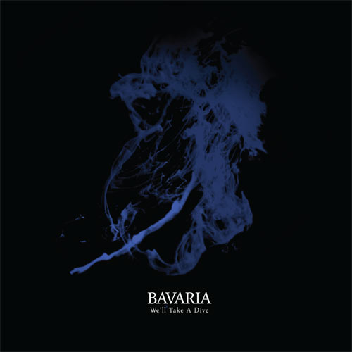
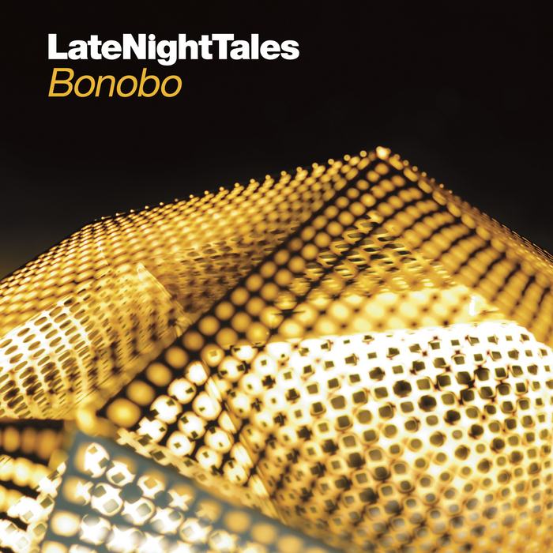

recensioni
salta contenutoIllum Sphere : Ghost of Then and Now
Se non fosse per quei tagli ai campioni vocali che tanto rimandano agli ultimi lavori più elettronici (e dub, oserei dire) di Bonobo, si potrebbe affermare che “Ghosts Of Then And Now”, il nuovo album in uscita su Ninja Tune, rappresenta quasi la colonna sonora di un film francese in bianco e nero.
continua →Joyless Jokers : Arms Of Darkness

I Joyless Jokers sono una band vicentina dedita al versante melodico del metallo della morte, il lato più orecchiabile e di facile assimilazione del genere che rese famose le band svedesi dei primi anni ‘90 grazie (soprattutto) alle lezioni impartite da Michael Amott in quel gioiello che risponde al nome di Heartwork.
continua →Bavaria : We'll Take a Dive
Anche per gli ascoltatori poco attenti è facile che il nome di John Tejada non sia del tutto nuovo: magari hai sentito qualcuna delle sue uscite recenti su Kompakt, oppure se sei un po’ più anziano ti ricordi di qualcuno dei sui grossi successi di metà anni duemila, tipo "Sweat(On The Walls)" o "Sucre", che all’epoca mettevano d’accordo davvero tutti i dj grazie a un groove inarrestabile e melodie semplici ma densissime, di quelle che ti si piantano in testa e non se ne vanno più.
continua →Bonobo : Late Night Tales
Come un’amore a distanza che, coltivato a lungo e bramato all’inverosimile, finalmente sfocia nel tanto agognato incontro definitivo, la trentatreesima uscita della collana LateNightTales rappresenta la congiunzione perfetta tra due entità fatte praticamente l’una per l’altra e che, sommandosi, scrivono un finale annunciato sin da quando Simon Green ha iniziato ad ottenere il successo che gli spetta.
continua →